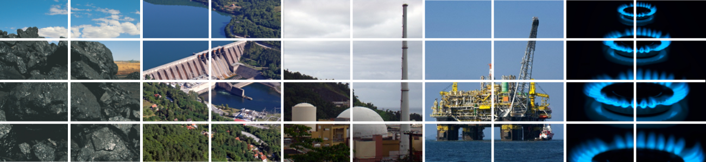
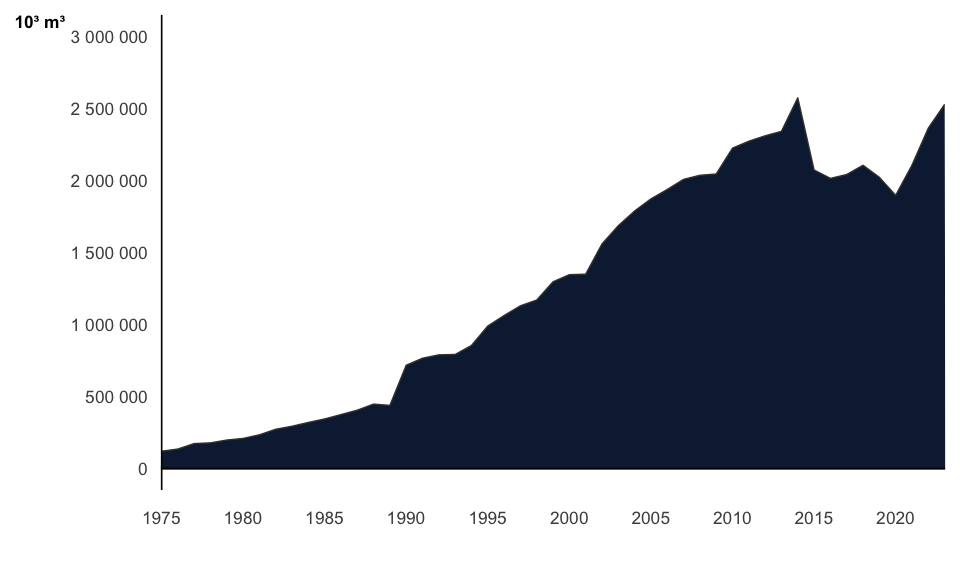
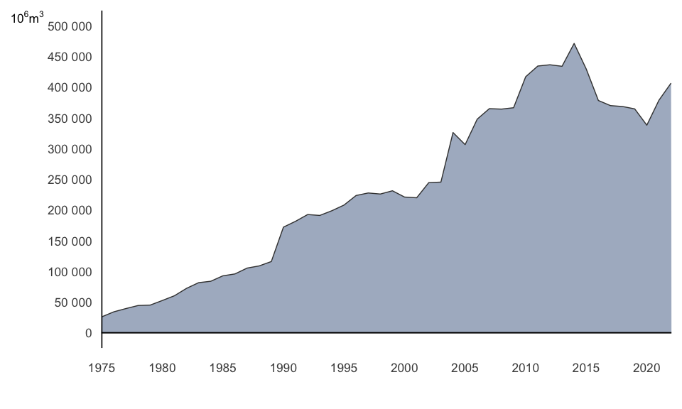
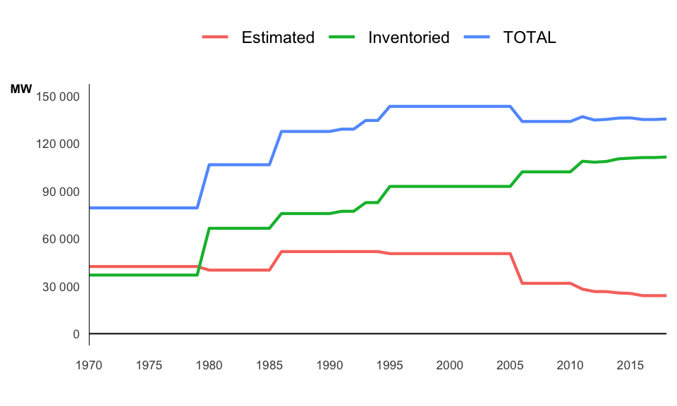
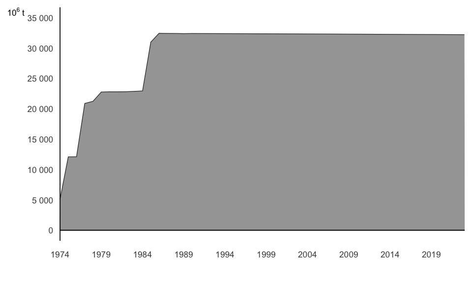
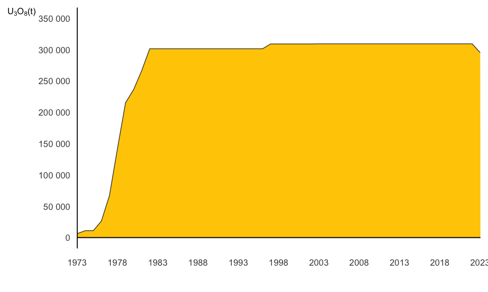

7 Energy Resources and Reserves

7.1 Criteria
The basic criteria for the estimation of energy reserves and resources are the following:
Oil and Natural Gas
Estimates of the volume of oil and/or gas are measured under the basic atmospheric conditions, multiplying the recovery factors (checked by engineering studies of reservoirs) by the proven volume of oil or gas discounting the volume produced up to the reference date.
Recovery Factor: it is the index that measures the efficiency of the techniques used for extracting the natural energy contained in the reservoir, as well as the additional external energy introduced into the reservoir, in order to produce a certain amount of oil and/or gas of the originally proved volume.
original volume of oil and/or gas: it is the volume of oil or gas checked in basic conditions, originally existing in the reservoir.
cumulative production of oil and/or gas: it is the volume of oil and/or gas measured under basic condition, extracted from the reservoir up to the time of evaluation.
pressure and temperature basic conditions:
- Absolute pressure: 1 atm. = 1.0332 kg/cm² (14.7 psi)
- Temperature: 20º C
Shale Oil
Concepts of resources and reserves for shale oil are those adopted by the Brazilian Mining Code:
Resources: concentration of solid, liquid or gaseous materials occurring naturally inside or on the surface of Earth’s crust so that economic extraction is usually or potentially feasible.
Identified Resources: specific deposits or bodies of solid, liquid or gaseous materials, whose location, quality and quantity are known through geological evidences or prospection in a greater or lesser degree of detail.
Reserve: portion of an identified resource from which an useful mineral or energy can be economically and legally extracted, at the time of its identification.
The definition of the terms “measured”, “indicated”, and “inferred” are applicable to both reserves and identified resources, depending on the degree of details of the research work performed:
Measured: refers to materials for which the estimates of quantity and quality have been computed with a margin of error of less than 20%, with detailed geological research and with systematic and representative sampling analysis.
Indicated: materials for which quality and quantity estimates have been computed both by detailed geological research and representative sampling, and by reasonable geological projections (extrapolation).
Inferred: materials for which quality and quantity estimates are based only on certain geological evidences and projections.
Carvão Mineral
Coal reserves have been determined as follows:
Minimum thickness: 0.5 to 1.0 m of coal in layer.
Measured reserve: reserve within a radius of 400 meters and an area of 0.5 km² , around the bore hole.
Indicated reserve: reserve external to the measured reserve within a radius of 1,200 meters from the holes, covering an area of 4.02 km².
Inferred reserve: reserve situated beyond the indicated reserve, up to a maximum distance of 4.8 km from the bore holes. The reserves shown in the balance sheet are geological “in situ”. For determination of recoverable reserves should be taken into account the losses in mining and benefaction, as well as problems due to faulting and diabasio intrusions.
Hydraulic Potential
Hydraulic potential is the potential which can be technically and economically exploited under existing technological conditions.
Hydro-electric potential is measured in terms of firm energy, meaning the largest power that can be generated during the worst hydrological period.
Inventoried hydro-electric potential includes operating and in construction power plants and those for which a basic and feasibility study has been prepared.
Considering the inventory as the base in which the potential is measured with high precision, it is possible to evaluate the precision of the values obtained for the estimated potential.
According with evaluation studies, that have already been proceeded, the estimated values stay up to 35% under the final inventoried value, thus it can be concluded that the estimated potential is very conservative.
Uranium
In Brazil, uranium reserves follow the conventional geological classification based on the criteria classification of the Brazilian Mining Code – measured, indicated and inferred.
The table information shows the geological reserves, because of the calculation of oil equivalence is based on the assumption that there are up to 30% losses in mining and benefaction.
The International Atomic Energy Agency – IAEA – has its own classification, which includes the criterion of cut-off for the cost of extraction and benefaction of the uranium.
Correspondence between the classifications:
Biomass
Biomass, intended for energetic use, is a primary, non-fossil, energy source consisting of organic matter of animal or vegetable origin. Biomass contains stored energy in form of chemical energy. Regarding its origin, biomass for energy purposes can be classified in the categories of forest biomass, its products and by-products or waste; agricultural biomass, agro-energy crops, wastes and by-products of agricultural, agroindustrial and animal production activities; and urban waste.
7.2 Brazilian Energy Resources and Reserves: Not including other renewable sources.
7.3 Petroleum and Natural Gas Proved Reserves
7.4 Proven Petroleum Reserves

7.5 Proven Natural Gas Reserves

7.6 Hydraulic Potential
7.7 Hydroelectric Potential

7.8 Coal and Peat Reserves
7.9 Coal Reserves

7.10 Uranium Reserves
